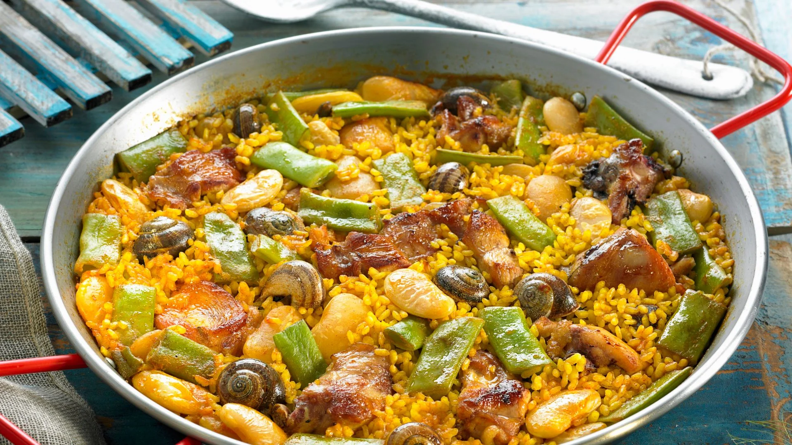
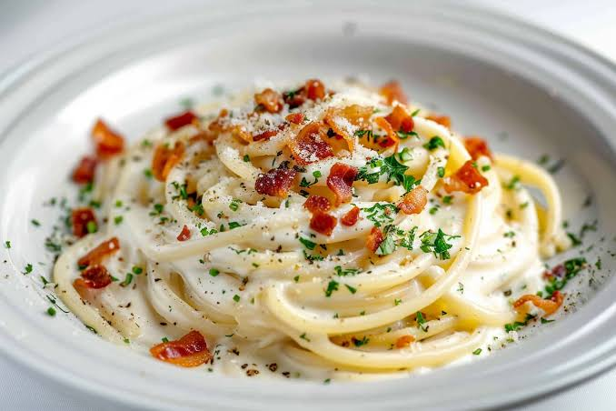
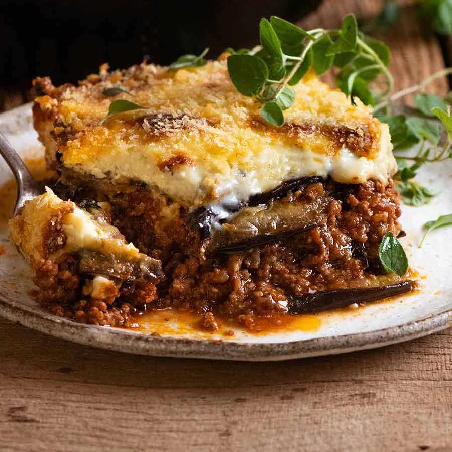

La paella tiene su origen en las zonas rurales de Valencia, donde los agricultores la cocinaban al aire libre sobre fuego de leña. La versión tradicional lleva arroz de grano corto, pollo, conejo, judías verdes, garrofón y azafrán, todo cocinado en una paellera ancha y poco profunda. El arroz absorbe los sabores del caldo y se deja reposar hasta formar el socarrat, una fina capa crujiente en el fondo que muchos consideran lo mejor del plato. Es un platillo pensado para compartir, tradicionalmente los domingos en familia.

La carbonara es un clásico de la cocina romana, aunque su origen exacto sigue siendo motivo de debate. La receta tradicional usa solo cinco ingredientes: pasta (generalmente espagueti), yemas de huevo, queso pecorino romano, guanciale (mejilla de cerdo curada) y abundante pimienta negra. La clave está en mezclar la pasta caliente con el huevo y el queso fuera del fuego, de modo que se forme una salsa cremosa sin necesidad de añadir crema. Es un ejemplo perfecto de cómo la cocina italiana logra un resultado extraordinario con pocos ingredientes.

La moussaka es uno de los platillos más queridos de la cocina griega y se prepara en capas, de forma similar a una lasaña. En la base se colocan rebanadas de berenjena fritas o asadas, seguidas de una mezcla de carne molida de cordero o res cocinada con cebolla, tomate, canela y otras especias. Todo se cubre con una gruesa capa de bechamel y se hornea hasta que la superficie queda dorada. El contraste entre la suavidad de la berenjena, el sabor especiado de la carne y la cremosidad de la salsa lo convierte en un plato muy completo.